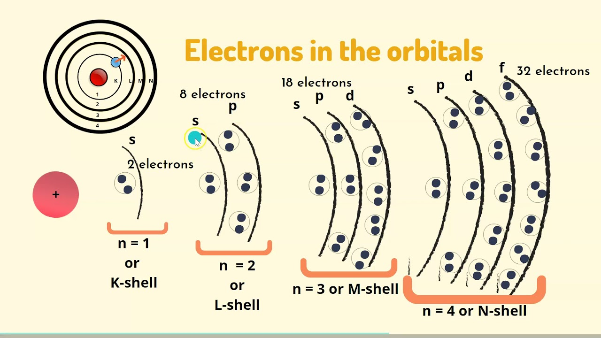
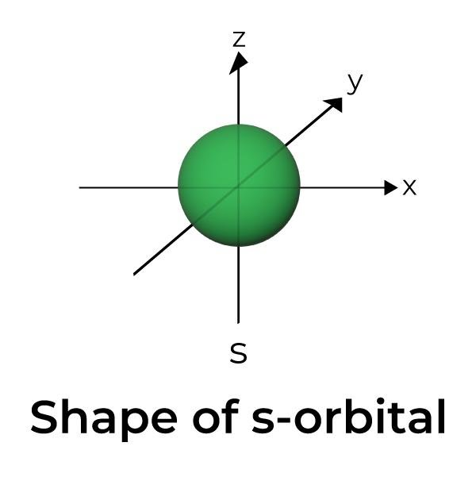
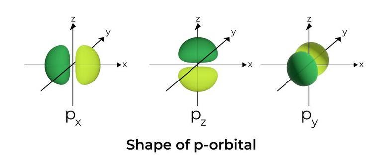
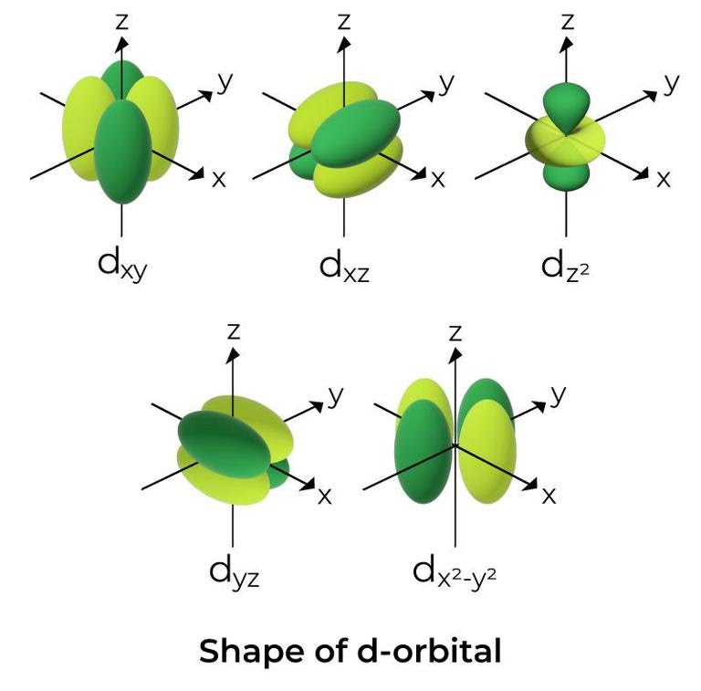
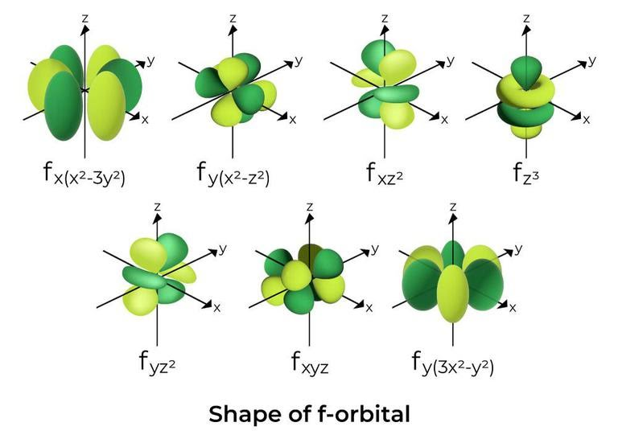

-
Квантови числа - всеки електрон в електронната обвивка може да са характеризира от четири числа
а) главно кватново число () - показва електронния слой, в който се намира електронът

- приема положителни целочислени стойности -
- колкото по-високо е главното квантово число, толкова по-висока енергия имат електроните в съответстващия слой
Слой K L M N O P б) орбитално квантово число () - показва подслоя, в който се намира електронът
- всеки слой е разделен на подслоеве, всички от които имат близка до тази на слоя енергия
- слой с главно квантово число се разделя на различни подслоя - първият слой се разделя на един подслой, вторият слой се разделя на два подслоя, третият на три и т.н.
- орбиталното квантово писло показва номера на подслоя, започвайки от нулата -
подслой означение s p d f g 
Пример: Електрон, който се намира в третият подслой () в слоя се означава с , а електрон, който се намира във втория подслой на слоя ще се означи с .
в) магнитно орбитално квантово число () - характеризира взаимодействието на магнитното поле, създадено от движението на електрона при поставянето на атома във външно магнитно поле
г) магнитно спиново квантово число () - характеризира собствения магнитен момент на електрона
-
Корпускулно-вълнови дуализъм - обектите в микросвета се описват от вълнови функции, което един път им придава свойства на частици, а друг път - на вълни
а) вълна на Дьо Бройл - всеки обект се характеризира от вълна с дължина, зависеща от неговите маса и скорост
б) принцип на неопределеността на Хайзенберг - не е възможно точното определяне на местоположението и скоростта на даден микрообект в един и същ момент
- произведението в грешките между импулса и позицията винаги е по-голямо от
- редуцирана константа на Планк:
-
Вълнова функция - всеки микрообект се описва от функция от вида
а) уравнение на Шрьодингер - описва еволюцията на вълновите функции
- решенията на уравнението се наричат вълновни функции
- аналитични решения на уравнението съществуват само за прости системи като единични електрони
- в останалите случаи се използват числени методи за решаване
б) статистическа интерпретация на Борн - квадратът на абсолютната стойност на вълновата финкция дава вероятността обектът, който описва функцията, да се намира на мястото с координати
-
Атомни орбитали - вълнови функции, които описват единични електрони в потенциала, създаден от атомното ядро
а) обозначение - вълновата функция описва електрон с квантови числа
- показва размера на орбиталата - колкото по-високо е , толкова по-голяма енергия има електрона и толкова по-голяма е орбиталата
- показва формата на орбиталата - орбитали с различно и еднакво имат еднаква форма, но различен размер
- характеризира пространствената ориентация на обриталата
б) видове - орбиталите с едно и също се групират заедно, показвайки подслоя, който описват
- -орбитала - описва електрон в подслой

- -орбитали (3 вида) - описват електрони в подслой

- -обритали (5 вида) - описват електрони в подслой

- -орбитали (7 вида) - описват електрони в подслой

в) квантова клетка - всяка орбитала представлява квантова клетка, която може да съдържа най-много 2 електрона и то само ако спиновете им са противоположни
г) изродени орбитали - орбитали с еднаква енергия (еднакви и )
- имат еднакъв размер и форма, но различна пространствена ориентация